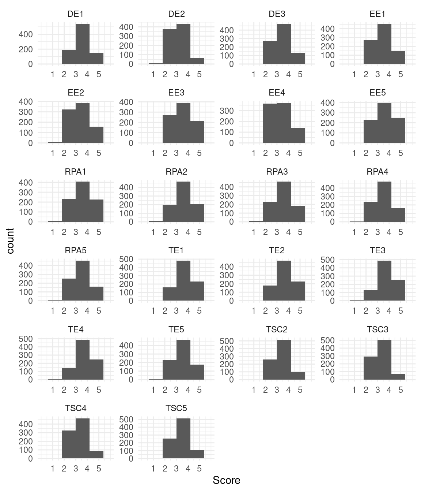
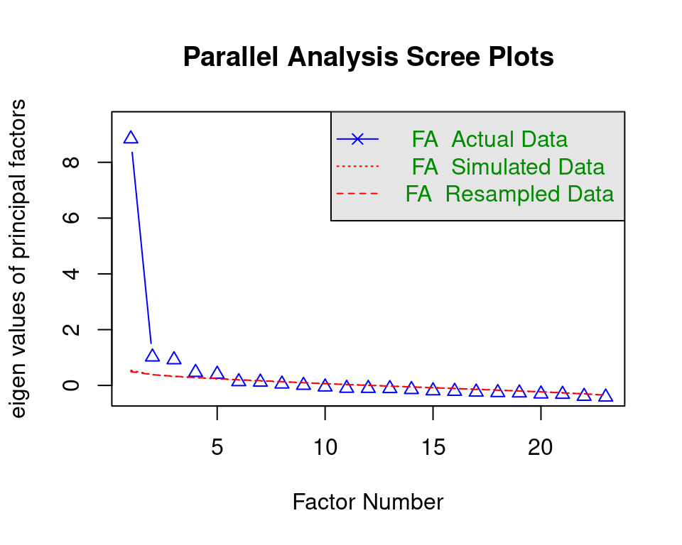
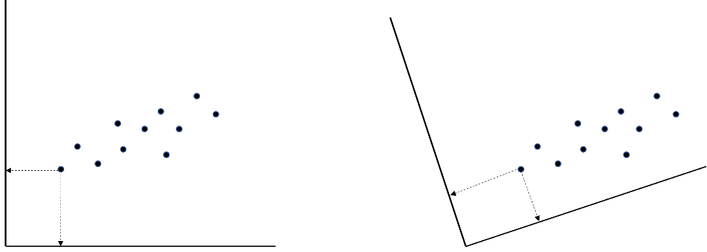

library(lavaan) # install.packages("lavaan")
library(psych) # install.packages("psych")
library(semTools) # install.packages("semTools")
library(effectsize) # install.packages("effectsize")
library(rio) # install.packages("rio")
library(tidyr) # install.packages("tidyr")
library(ggplot2) # install.packages("ggplot2")
library(devtools) # install.packages("devtools")
library(sleasy) # install.packages("combinat"); install_github("JoranTiU/sleasy")20 Factor Analysis in Education Research Using R
Abstract
Factor analysis is a method commonly employed to reduce a large number of variables into fewer numbers of factors. The method is often used to identify which observable indicators are representative of latent, not directly-observed constructs. This is a key step in developing valid instruments to assess latent constructs in educational research (e.g., student engagement or motivaion). The chapter describes the two main approaches for conducting factor analysis in detail and provides a tutorial on how to implement both techniques with the R programming language. The first is confirmatory factor analysis (CFA), a more theory-driven approach, in which a researcher actively specifies the number of underlying constructs as well as the pattern of relations between these dimensions and observed variables. The second is exploratory factor analysis (EFA), a more data-driven approach, in which the number of underlying constructs is inferred from the data, and all underlying constructs are assumed to influence all observed variables (at least to some degree).
1 Introduction
Educational scientists are usually after the invisible: sense of belonging, intelligence, math ability, general aptitude, student engagement…the list of crucial, multifaceted, but not directly observable student characteristics goes on. But how do researchers measure and study what they cannot see? One solution is not looking for the invisible cause itself but for its consequences. Just like one cannot see the wind but can tell it is there from the moving leaves, researchers can indirectly infer student engagement by looking at observable aspects of students' online behavior. For example, the more engaged students are, the more effort they invest in learning (i.e., longer online time), and the more regular and frequent they post on fora. These observable variables are the gateway to the underlying engagement construct that is theorized to drive students to be engaged, and factor analysis is the key to opening that gate. If scores on a set of observed variables are all caused by the same underlying construct of interest, the relations between these variables (i.e., the covariances that indicate how increases/decreases in one behavior are related to increases/decreases in another) are an expression of this underlying construct. This is exactly the core tenet of factor analysis. The method examines the covariances between the observed variables and, from this information, extracts the underlying unobserved or latent construct (as well as students' relative scores on it).
The inventor of factor analysis is Spearman, who was trying to make sense of the fact that tests of widely varying cognitive abilities all positively correlated with each other. He reasoned that the cause of this was an underlying construct (or factor) called "general intelligence" that was causing people's performance on all of those tests [1]. Spearman's work on factor analysis was later extended by Thurstone, who believed that people's performance was influenced by more than just one latent dimension. Thurstone [2], therefore, expanded factor analysis to enable the extraction of multiple underlying constructs based on the covariances between variables. The extension allowed performance on a math test to, for example, be influenced both by math ability (the key ability that should be measured) and reading ability (the ability to accurately understand questions on the math test in order to answer them correctly).
Jöreskog introduced the final major addition to factor analysis. Although Spearman's and Thurstone's versions of factor analysis already allowed for exploring the factor structure for a given dataset, it was not yet possible to confirm if the factor structure fit well to the data and, thus, if the covariances between variables implied by the factor structure match the observed covariances in the dataset. Jöreskog [3] figured out how to estimate factor models in a way that made this possible. An added benefit of this estimation method was that it allowed for factor models in which observed variables (e.g., behaviors, tasks, or questionnaire items) were not influenced by all the assumed underlying dimensions but, for example, only by one, which was not possible in the methods of Spearman and Thurstone. This extension allowed adding theory and/or practical experience to the factor analysis. For instance, one could test the hypothesis that students' math ability consists of the separate sub-dimensions addition, subtraction, division, and multiplication by letting all tasks of a math test that involve addition belong to just one underlying addition factor, all the tasks involving multiplication to just one underlying multiplication factor, et cetera. If this multidimensional model of math ability fits the data well, students can subsequently be evaluated on each of these dimensions separately (instead of on an overall math ability factor). The approach in which researchers confirm if a specific factor model (i.e., for which both the number of underlying dimensions and the pattern of relations between these dimensions and the observed variables) fits to the data is nowadays called confirmatory factor analysis (CFA). In contrast, the more data-driven approach in which the number of underlying constructs is inferred from the data and all underlying constructs are assumed to influence all observed variables is called exploratory factor analysis (EFA).
Nowadays, both EFA and CFA are readily available in modern statistical (open-source) software and applied regularly across the social sciences in general and educational research in particular. For example, Krijnen et al. [4] used EFA to refine a typology of home literacy activities. They cautiously anticipated four hypothetical categories of home literacy activities (oral language exposure, oral language teaching, code skills exposure, and code skills teaching activities). However, since the authors did not have a strong theory or prior factor-analytical results to support this anticipated factor structure, they refrained from testing if that specific factor structure fit to the data with CFA and instead used the more data-driven EFA approach. Their results suggested that there were actually three factors underlying the observed variables in their dataset (oral language teaching, oral language exposure, and general code activities).
In contrast, Hofhuis et al. [5] used factor analysis to validate a shortened version of the Multicultural Personality Questionnaire (MPQ; [6]), a measure of intercultural competence, among a sample of students in an international university program. The authors wanted to determine if this short form of the MPQ (MPQ-SF) could be used instead of the longer original and if item scores of both versions of the questionnaire were influenced by the same five theorized aspects of inter-cultural competence (cultural empathy, emotional stability, flexibility, openmindedness, and social initiative). Since previous research on the original MPQ provided insight into both the number of underlying factors and the specific relations between these factors and the set of items retained on the MPQ-SF, the authors used CFA in this study. They found that the factor structure of the MPQ-SF fit well to the data and that the structure was thus comparable to that of the original MPQ.1
In the above, it was stressed that CFA is used when researchers have an idea about the factor structure underlying the data that they want to confirm, while EFA is used more exploratively when researchers have less concrete guiding insights for specifying the model. In practice, CFA and EFA are both used in confirmatory as well as exploratory settings and often even in the same study. Even if researchers have a well-substantiated idea about the number of constructs underlying their observations, they can use EFA to see if the number of factors found by this analysis matches their hypothesis. Similarly, researchers with competing theories about the factors underlying their observed behaviors can still use CFA to explicitly compare these competing models in terms of fit. Flora and Flake [8] discuss how neither EFA nor CFA is purely confirmatory or exploratory in more detail, arguing that, in essence, it comes down to one's specific research context. This will not further be discussed in this chapter. Instead, an integrated use of EFA and CFA often encountered in Educational Sciences is presented. The presentation is kept applied and focuses on conducting factor analysis in R. For more (technical) details, see the readings listed at the end of the chapter.
2 Literature review
Several examples of factor analysis exist in learning analytics, which can be grouped broadly under two categories: factor analysis of self-reported data instruments (e.g., surveys) and factor analysis to explore students' online data. Analysis of self-reported instruments seems to be most widely used within the emerging research field of learning analytics. For instance, Whitelock‐Wainwright et al. [9] used EFA and CFA to validate an instrument that measures students' expectations of ethics, privacy, and usage of their learning analytics data. The analysis suggested a two-factor model that represented two categories of variables of ideal and predicted expectations of learning analytics. Similarly, Oster et al. [10] used EFA to validate an instrument that measures learning analytics readiness among institutions. The authors found that a five-factor model best represents the data (with the dimensions data management expertise, data analysis expertise, communication and policy application, and training). Similarly, factor analysis has been used to create an instrument for measuring variables influencing learning analytics dashboard success. For instance, Park and Jo [11] measured learning analytics dashboard success through an instrument based on Kirkpatrick's four evaluation levels (i.e., Reaction, Learning, Behavior, and Results). Through EFA, they found that five dimensions were more appropriate than four, as suggested by the original instrument, which CFA later confirmed. Similarly, Kokoç and Kara [12] used the Evaluation Framework for Learning Analytics to evaluate the impact of a learning analytics dashboard on learner performance. After conducting CFA, they found that the three-factor model of the Evaluation Framework for Learning Analytics for learners provided the best model fit for the collected data, confirming the structure of the original instrument.
Besides the aforementioned traditional examples, factor analysis has also been used in learning analytics with students' online data logs. For instance, Hernández-García et al. [13] used factor analysis to identify predictors derived from data about students' interactions. The authors found that a three-factor model best represented students' interaction variables (with dimensions groups' team message exchanges, distribution of postings, and reciprocity of interactions). In that case, factor analysis helps find groups of predictors, understand their underlying structure, and reduce dimensionality. Similarly, Fincham et al. [14] used EFA and CFA to build a theorized model of engagement based on three groups of variables derived from online log data, analysis of sentiments, and metrics derived from the discourse of online posts. Others have applied similar approaches to study the structure of log data. For instance, Baikadi et al.[15] applied EFA to learner activities within four online courses to identify emergent behavior factors. The findings suggested a four-factor model including activity, quiz activity, forum participation, and participation in activities. Another example is the work by Wang [16], who used factor analysis for dimensionality reduction of log data, deriving predictors of learning performance from students' fine-grained actions on the learning management systems.
The remainder of this chapter first provides a brief description of the factor analysis model, the model that is at the basis of both EFA and CFA. Second, the steps needed to perform factor analysis in R are presented by applying EFA and CFA to education data that is openly available. The application begins with data preparation, requirements, and initial checks. Additionally, it is shown how to set aside a holdout sample from the original dataset (which is necessary for establishing the generalizability of results from an EFA and/or CFA to future samples, as explained below). After these preliminary steps, it is shown how to run an EFA and interpret the outcomes. The part ends with a thorough description of how to do a CFA and assess generalizability. The chapter ends with a discussion and recommendation for further reading.
3 Recap of the Factor Analysis Model
Factor analysis can be seen as a set of (multiple) linear regression models where each observed variable is regressed on one or more latent factors (see Figure 1 in [17]). Like in regression, researchers get regression weights, intercepts, and error terms. They just get a set of these parameters for each observed variable in the analysis. The regression weights are referred to as loadings in factor analysis (the straight arrows in Figure fig-1) and indicate how strongly the observed variables are related to the underlying factors. The intercepts (not explicitly indicated in Figure fig-1) are the expected scores on the observed variables when the factor means are equal to zero. Finally, the error terms (the \(\epsilon\)'s in Figure fig-1) capture the variance unexplained by the factors and, thus, the unique variance of the individual observed variables. The difference between the factor analysis model and a regular regression model is that the values of the factors are unobserved. Therefore, estimating a factor analysis model is more complicated than estimating a regular regression analysis model with observed predictors and requires specialized software.

As mentioned in the introduction, there are two types of factor analyses: Exploratory factor analysis (EFA; Figure fig-2) and confirmatory factor analysis (CFA; Figure fig-3). The key difference is that all loadings (i.e., all variable-factor relations) are estimated in EFA. As a result, variables may load on more than one factor (referred to as cross-loadings). In contrast, in CFA, several loadings are set to zero (as thus not estimated) based on researchers' a priori hypotheses about which variables are unrelated to the underlying factors. Therefore, the CFA model is considered a restricted version of the EFA model.

Another difference is the determination of the number of factors. In EFA, the number of underlying factors is determined using a data-driven approach; that is, the likely number of underlying factors for the sample data is first estimated, for example, using parallel analysis [18]. Researchers then fit a set of factor models, with the number of underlying factors in these models based on the parallel analysis result. For example, if the parallel analysis suggests 5 factors, researchers can fit models with 4, 5, and 6 underlying factors. These three models are then compared in terms of both model fit—using the Bayesian information criterion [19]—and in terms of the interpretability of the models (i.e., “Do the relations between the factors and the observed variables they load on make sense?”). All this will be discussed in the Section “Factor Analysis in R” of this chapter.
In contrast, the number of factors in CFA is determined based on strong a priori hypotheses. When researchers have multiple competing hypotheses, each can be translated into a separate CFA model. These models can then again be compared in terms of how well they fit the data. The hypothesis underlying the best-fitting model can be considered the most likely explanation of the data according to the sample at hand.

4 Integrated Strategy for a Factor Analysis
As described in the introduction, there is no clear delineation between when to use either EFA or CFA, and both methods often co-occur within the same study. Therefore, this section provides a detailed description of a principled modeling strategy that integrates both EFA and CFA. More specifically, the three steps that researchers should go through whenever latent constructs are part of their research (either because the instrument is the main focus of the study or because the latent construct is a predictor or outcome in an analysis) are discussed: (1) exploring the factor structure, (2) building the factor model and assessing fit, and (3) assessing generalizability. As a starting point, it is assumed that the researcher has already completed the initial instrument development phase for a construct of interest such as inter-cultural competence (i.e., that the researcher is using an instrument with variables/tasks/behaviors from previous research, has adjusted an instrument from previous research (e.g., by shortening, extending, translating, or revising content), or has newly developed an instrument (e.g., based on theory)). Furthermore, it is assumed that the researcher has gathered data from their population of interest (e.g., students).
4.1 Step 1: Exploring the Factor Structure
Once the variables/tasks/behaviors have been selected and data on them have been obtained using a sample from the population of interest, you, the researcher, should start with an EFA. If a previously validated instrument is used, or if strong prior hypotheses about the underlying factor structure of the instruments are available, you should investigate whether the number of factors and the way the variables load on the factors are in line with anticipated results. Thus, the key questions are “Do variable scores believed to be caused by the same underlying factor indeed all load on the same factor?” and, if only a single underlying factor is assumed to cause the scores on a set of variables, “Do these variables indeed have strong factor loadings with only a single factor?”
If a new instrument is the starting point, you should determine if the factors and the pattern of loadings can be interpreted. The key questions are “Do all variables (primarily) loading on the same factor indeed have something in common substantively?” and “Are variables that load on different factors indeed qualitatively different somehow?”
Referring back to the example about a math test, you could see that tasks involving addition, subtraction, division, and multiplication loaded on 4 distinct factors (which could then preliminarily be identified as addition-, subtraction-, division-, and multiplication ability), with each set of tasks being primarily influenced by a single factor. At this stage, you may have to make some adjustments, like removing variables without substantial loadings (e.g., loadings smaller than an absolute value of .3) on any dimensions and reestimating the EFA. Note that you should always think about the reasons for low loadings (e.g., because of an ambiguously formulated item) and not just remove variables.
4.2 Step 2: Building the Factor Model and Assessing Fit
After choosing a model with EFA, you need to refine this model and use CFA to assess the model fit (and thus how well the covariances between variables implied by the factor structure match the observed covariances in the dataset). In the EFA in the previous step, all variables were allowed to load on all factors, but often, you have theoretical or (prior) empirical information that you want to include in your analyses, and that restricts the number of these cross-loadings. In this model-building step, you could remove all factor-variable relations (i.e., factor loadings) that do not fit your theory or make substantive sense, but attention must be given to the size of the factor loadings. Close-to-zero factor loadings can be removed relatively risk-free, but larger factor loadings require more careful consideration. Even if these factor-variable relations do not make substantive sense (straight away), the data tell you they should be there. So consider them carefully; if, after closer inspection, they can be incorporated into your prior theory or assumptions, you might want to keep them; if not, you can always remove them and see if the model still fits your data.
After selecting which variable-factor relationships should be removed, you can build the corresponding CFA model and fit it to the data to determine if it fits sufficiently well. If the model does not fit well, you can return to your EFA results and see if you might have to allow additional non-zero loadings (or apply other modifications discussed further below). Note that you should only add relationships to the model that make substantive sense. This process may require several rounds of adjustments until your model fits well and is substantively sound.
4.3 Step 3: Assessing Generalizability
After the previous step, you have a preliminary model that fits well with both your new or existing theory and the current data. However, since the ultimate goal should be to present instruments that can be used to measure constructs in future studies, it is essential that you also establish that your preliminary model fits new yet unknown data and, thus, that your model does not describe only your initial sample properly but also other samples from your population. Therefore, in the final step, the preliminary model must be fitted to a new dataset from the same population as the data used to build the preliminary model. This final validation step can be referred to as cross-validation.
To assess the generalizability, one could collect a second dataset. However, in practice, gathering data more than once for instrument development purposes is often unfeasible or undesirable. A suitable alternative is to randomly split one dataset into two parts: one sample on which you perform Steps 1 (exploring the factor structure using EFA) and 2 (building the factor model and assessing fit with CFA) and one so-called holdout sample, which you set aside for Step 3 (assessing generalizability). If the CFA model fits the holdout sample, you can be more confident that your instrument can be used in future studies and settle on it as your final model. On the other hand, if the preliminary model does not fit the holdout sample well, you have to conclude that you have not found an adequate instrument yet. In that case, the sources of misfit between the CFA and the holdout sample need to be investigated (more on this below when local fit and modification indices are discussed), and findings from this inspection need to be used to update your theory/model. This updated theory/model then needs to be investigated again by going through all the steps discussed above on a new (split) dataset.
The above steps present a suitable factor modeling strategy for any study using instruments to measure latent dimensions. The only situation in which you could theoretically fit a CFA model immediately and assess its fit is when using an existing instrument on a sample from a population for which the instrument had already been validated in previous research. However, even in that situation, going through all the above steps is advisable because your sample might differ in important ways from the ones on which the instrument was validated, which could bias your results.
5 Factor Analysis in R
In the following, you are taken through the essential steps of investigating the factor structure using both EFA and CFA in the open-source software R. In describing the steps, the following is addressed: checking data characteristics for suitability for EFA/CFA, deciding on the number of factors, assessing global and local model fit, and evaluating the generalizability of the final factor model. To this end, a dataset is used to which factor analysis has been applied before [20]. The dataset contains survey data about teacher burnout in Indonesia. In total, 876 respondents have answered questions on five domains: Teacher Self-Concept (TSC, 5 questions), Teacher Efficacy (TE, 5 questions), Emotional Exhaustion (EE, 5 questions), Depersonalization (DP, 3 questions), and Reduced Personal Accomplishment (RPA, 7 questions). Thus, the total number of variables equals 25. The questions were assessed on a 5-point Likert scale (ranging from 1 = “never” to 5 = “always”). For more information on the dataset, see the data chapter of this book [21].
The first section shows the necessary preparation, which involves reading in the data, evaluating whether the data are suited for factor analysis, and setting apart the holdout sample needed for assessing the generalizability. The next two sections show how to conduct an EFA to arrive at a preliminary factor model/factor structure (Step 1) and refine this model using CFA (Step 2). The final section shows how to test the generalizability of the refined factor model using cross-validation (Step 3).
5.1 Preparation
In order to follow all the steps, you have to install the following packages with install.packages()(you only have to install packages the first time you want to use them; therefore, the commands are hashtagged below) and load them with library() whenever you open the R script.
5.1.1 Reading in the data
The data can be read in, and the variable names can be extracted with the following commands:
dataset <- import("https://github.com/lamethods/data/raw/main/4_teachersBurnout/2.%20Response.xlsx")
var_names <- colnames(dataset)If not all variables in the dataset should be used for the factor analysis, you should only add the relevant variables to the var_name object. The commands below will then take this into account automatically.
5.1.2 Are the data suited for factor analysis?
Several data characteristics are necessary for both EFA and CFA. First, the variables must be continuous. Variables are seldom truly continuous, but they can be treated as such if they were assessed on a scale with at least five response categories [22]. If the variables are not continuous, factor analysis can still be conducted, but a specific type of estimation for categorical data is required. Note that this is beyond the scope of this chapter (interested readers are referred to [23]). Moreover, the scale on which the observed variables are assessed should be the same, which may not hold in certain educational data. If the variables have been measured on different scales, or if the variables are measured on the same scale, but the range of observed scores on the variables differs substantially between variables (e.g., some variables have scores ranging from 1 to 5, while others have scores ranging only from 2 to 4), the variables should be transformed before the factor analysis to make their scales more comparable. The following command can be used to inspect each variables’ range:
describe(dataset)All variables were assessed on 5-point Likert scales, and from the output, you can see that all variables have very similar observed score ranges. Therefore, you can treat them as continuous, and transformation is not necessary (for information on how to transform data in R, see [24]).
Second, the sample size needs to be sufficiently large. There are several rules of thumb in the literature. Some simply state that a sample size of about 200 should be targeted, although smaller samples may be sufficient for simpler models (e.g., models with fewer factors and/or stronger relations between the factors and observed variables), while more complicated models (e.g., models with more factors and/or weaker relations between the factors and observed variables) will require larger samples. Other rules are based on the ratio between sample size and the number of estimated parameters (i.e., factor loadings, intercepts, and error variances). Bentler and Chou [25] recommend having 5 observations per estimated parameter, while Jackson [26] recommends having 10, and preferably 20 observations, for each parameter you want to estimate (e.g., for a one-factor model with 10 variables, one should aim for 30 (10 factor-loadings + 10 intercepts + 10 error-variances) * 10 = 300 cases. Remember that these recommendations are for the data the model is fitted to. Since you also need a holdout sample to assess the generalizability of your model, you need to have about twice the number of observations! The sample size can be assessed by asking for the number of rows in your dataset with the following command:
nrow(dataset) # 876[1] 876For the example data with 25 variables that are assumed to measure 5 latent constructs, you have to estimate 25 intercepts, 25 residual variances, and 5 * 25 = 125 factor loadings. This results in a total of 175 parameters. Looking at the output, you can conclude that the sample size is sufficiently large for both EFA and CFA according to the guidelines by Bentler and Chou [25] (5 * 175 = 875) but not those of Johnson [27]. Since this dataset does not have twice the recommended sample size, you should not set aside a holdout sample and save the validation of the model for a future study. However, for illustration purposes, it will nevertheless be shown how to create a holdout subset for evaluating the generalizability of the final factor model.
Next, there need to be sufficiently large correlations between the variables. Otherwise, there is no point in looking at the factor structure. You can rule out that the variables in the dataset are uncorrelated with Bartlett’s test [28], which tests whether the correlation matrix is an identity matrix (a matrix with off-diagonal elements equal to zero) and, thus, whether the variables are uncorrelated. The null hypothesis of this test is that the correlation matrix is an identity matrix. If the null hypothesis is rejected, it can be concluded that the variables are correlated and, thus, that you can continue with the factor analysis. With the following command, you test whether the p-value for the Bartlett’s test is smaller than an alpha level of 0.05 and, thus, if the null hypothesis of “no correlation between variables” can be rejected:
(cortest.bartlett(R = cor(dataset[, var_names]), n = nrow(dataset))$p.value) < 0.05 [1] TRUEWith the argument “R”, you provide the correlation matrix for the data (specifically for the variables that shall be part of the factor analysis), and with the argument “n” you determine the sample size, which is equal to the number of rows. The p-value is indeed smaller than 0.05. Thus, the variables correlate.
In addition to checking for correlations between variables, it is also relevant to determine if there is enough common variance among the variables. You can assess this with the Kaiser-Meyer-Olkin (KMO) test [29]. The KMO statistic measures what proportion of the total variance among variables might be common variance. The higher this proportion, the higher the KMO value, and the more suited the data are for factor analysis. Kaiser [29] indicated that the value should be at least .8 to have good data for factor analysis (and at least .9 to have excellent data). With the following command, you obtain the results:
KMO(dataset)Kaiser-Meyer-Olkin factor adequacy
Call: KMO(r = dataset)
Overall MSA = 0.94
MSA for each item =
TSC1 TSC2 TSC3 TSC4 TSC5 TE1 TE2 TE3 TE4 TE5 EE1 EE2 EE3 EE4 EE5 DE1
0.96 0.96 0.95 0.94 0.96 0.93 0.96 0.94 0.94 0.96 0.95 0.94 0.95 0.94 0.97 0.87
DE2 DE3 RPA1 RPA2 RPA3 RPA4 RPA5
0.86 0.92 0.91 0.91 0.95 0.94 0.96 The overall KMO value equals 0.94. Thus, the data are excellent for data analysis.
Next to the necessary data characteristics, you need to be aware of the non-normality of the variables and missing data. A robust estimation method is required if the variables are not normally distributed. If the data contain missing values for one or more variables, this must also be accounted for in the estimation. How to do this will be described below. Normality can be assessed by inspecting the variables’ histograms2:
dataset |> pivot_longer(2:ncol(dataset),
names_to = "Variable", values_to="Score") |>
ggplot(aes(x=Score)) + geom_histogram(bins=6) +
scale_x_continuous(limits=c(0,6),breaks = c(1,2,3,4,5)) +
facet_wrap("Variable",ncol = 4,scales = "free" ) + theme_minimal()Warning: Removed 44 rows containing missing values (`geom_bar()`).
Looking at Figure fig-4, you can see that the distribution of the variables is somewhat left-skewed. Therefore, an estimation method that is robust against non-normality should be used.
Next, you can check for missing data with the following command:
colSums(is.na(dataset))TSC1 TSC2 TSC3 TSC4 TSC5 TE1 TE2 TE3 TE4 TE5 EE1 EE2 EE3 EE4 EE5 DE1
0 0 0 0 0 0 0 0 0 0 0 0 0 0 0 0
DE2 DE3 RPA1 RPA2 RPA3 RPA4 RPA5
0 0 0 0 0 0 0 There are no missing observations for any of the variables in this dataset.
5.1.3 Setting a Holdout Sample Apart
Once you know that the data are suited for factor analysis, you can consider setting a holdout sample apart to assess the generalizability of your findings, as explained before. However, it is important to consider the sample size in your decision. As indicated above, the minimum required sample size should at least be 5 (and preferably 10 or 20) times the number of parameters you will estimate. Do not set a holdout sample apart unless your sample size is approximately twice as large as the minimum required sample size (or larger). Otherwise, you will not have enough data to build an appropriate model in the first place. The validation of the final model then needs to be done in future research. Note, however, that the number of parameters for a CFA model is generally smaller than that for an EFA model. Therefore, it is okay if the holdout sample is somewhat smaller than the model building sample.
As was already determined above, the sample size was not twice the minimum required sample size for a model with 25 variables and 5 latent factors, but for illustrative purposes, a holdout sample is set apart nevertheless. To this end, you can randomly assign 438 rows to a model-building and holdout dataset. For this, you can use the following commands:
set.seed(19)
ind <- sample (c (rep("model.building", 438), rep ("holdout", 438)))
tmp <- split (dataset, ind)
model.building <- tmp$model.building
holdout <- tmp$holdoutWith the first line of code, you set a seed. Setting a seed ensures that you get the same random sequence of elements every time you rerun the code, which is crucial for replicating your results. Then, you create a vector “ind” that contains 438 times the terms “model.building” and “holdout”, respectively, in random order. This gives you a total of 876 classifications, one for each participant (i.e., row) in your data. Subsequently, you create a temporal list termed “tmp”, which contains two datasets: for each row number, the function split() checks whether it is assigned the label “model.building” or “holdout” and assigns this row to the respective dataset accordingly. For example, suppose the vector “ind” has as the first three elements “model.building”, “model.building”, and “holdout”. In that case, the first two rows of the dataset are assigned to the model-building dataset, and the third observation is assigned to the holdout dataset. In the last step, the two new datasets are extracted from the list and stored in objects named “model.building” and “holdout”. You will use the model-building data for all the following analyses until the section “Assessing Generalizability”.
5.2 Step 1: Exploring the Factor Structure
The first step in exploring the factor structure is to determine how many dimensions are likely underlying the construct of interest. In this tutorial, you will see how to determine this using a combination of two commonly used data-driven approaches: parallel analysis [18] and the Bayesian information criterion (BIC; [19]). These two methods complement each other greatly: Parallel analysis indicates a range for the number of underlying dimensions, and the BIC tells us which specific number of dimensions from this range fits the data best. Parallel analysis is a simulation-based method that chooses the number of factors by comparing the amount of variance explained by a certain number of factors in your data (with this amount of variance explained by each factor being called the factor’s eigenvalue) to the amount of information that the same number of factors would explain on average across many parallel simulated datasets (i.e., with the same number of variables and observations), but with zero correlations between all variables. This comparison allows for testing if the amount of explained variance in your data is larger than expected based on purely random sampling error alone. The number of factors chosen by parallel analysis is the number for which the explained variance in your data is larger than the explained variance for the simulated data. Details about how this method works are beyond the scope of this chapter but can be found in the help file3 of the fa.parallel() function to perform the analysis.
With the argument x, you specify that you want to use your model-building data and, more specifically, all the columns corresponding to your variables. With the second argument fa = "fa", you specify that you assess the best number of factors for factor analysis and not the best number of components for principal components analysis, which is a related yet different method for finding dimensions in data (e.g., [31]). The output consists of two parts: a message and a figure:
fa.parallel(x = model.building[,var_names], fa = "fa")Parallel analysis suggests that the number of factors = 5 and the number of components = NA 
The message indicates that five factors are likely underlying the data. Figure fig-5 shows that with more than five factors (x-axis), the amount of information explained by the factors (on the y-axis) in your data is lower than for the simulated data.
It is important to note that parallel analysis is a purely data-driven method, and the solution depends on the specific sample. Therefore, you should see the 5 factors only as a starting point (such that the number of underlying factors is likely around five) and treat parallel analysis as giving you a plausible range for the number of underlying factors, equal to the solution plus and minus one factor (or more, if you want to). The final decision for the number of underlying factors is made by running several factor models—one for each plausible number of underlying factors as determined using the parallel analysis—and comparing these models in terms of interpretability (i.e., does the pattern of variable-factor relations make substantive sense and/or does it fit prior knowledge/assumptions) and fit (using the BIC). The BIC can be used for model selection for many analyses, including factor analysis, and the criterion balances the fit of the factor model to the data on the one hand and model parsimony (i.e., simplicity) on the other by penalizing models for each parameter they contain. The lower the BIC value, the better, so if the smallest BIC value corresponds to the model with five factors, you have stronger support for the five-factor solution. Still, the final decision should take interpretability into account. If the parallel analysis and BIC disagree, your final decision should consider interpretability even more.
The exploratory factor analysis can be performed with the following command:
EFA <- efa (data = model.building[, var_names], nfactors = 4:6,
rotation = "geomin", estimator = "MLR", meanstructure = TRUE)The efa() function is part of lavaan [32], which is a very popular, open-source R package that can be used for estimating various latent variable models, including factor analysis and structural equation modeling (see Chapter 2 [21]). With the first argument data, you again specify the dataset on which you want to perform factor analysis, nfactors indicates the range of factors for which you want to retrieve the results. Next, the argument rotation pertains to identifying the model, which is only necessary for EFA and not CFA because, in the latter, you specify restrictions (i.e., restricting loadings to be equal to zero) that automatically lead to the identification of the model. In EFA, where you do not have restrictions, there are an infinite number of solutions identical in fit; that is, your factor matrix with loadings can be transformed or “rotated” in infinite ways. To clarify, consider the following: with (continuous) observed variables, you can visualize your data using scatterplots in which each point represents an individual’s combination of scores on two variables that are represented by the x-axis and the y-axis. With observed variables, you have individuals’ actual scores on the variables in your dataset. Therefore, the locations of the points relative to the x-axis and y-axis (and, therefore, the axes’ position) are fixed. With factors, the situation is different. The latent variables are unobserved, which means that the position of the axes (which now represent latent variables) is not “pinned down” by the data. Considering Figure fig-6, for example, both axis orientations are equally likely with latent variables. Note that in both plots, the data points are in the exact same location; only the orientations of the axes representing the (in this case, two) latent factors are different. Rotation is about choosing one out of all the many possible orientations of the axes.
The choice of the orientation of the axes is generally made based on how easy it makes the interpretation of the factors. Typically, the aim is to find a so-called simple structure [33] in which the orientation of the axes ensures that each observed variable is strongly related to one factor (i.e., has a large loading on one factor) and is as unrelated as possible to all others (i.e., has small cross-loadings, for example, smaller in absolute value than .3). This simple structure makes interpreting the factors (which is done by looking for a common theme in the variables that load on them) easier.

In short, rotation is like taking a good selfie of yourself in front of the Eiffel Tower. You want both yourself and the tower to be clearly visible in the picture, so you move your camera until you get a clear shot of both. You and the Eiffel Tower both stay in exactly the same place! What changes is the vantage point, or angle, from which you look at both. Similarly, rotation moves your vantage point (the axes) to make the factors stand out clearly in your results, while the position of your observed data does not change.
Going back to the rotation argument in the code above, you can use geomin, a method of rotation that allows your factors to be correlated with each other, which is a reasonable assumption in educational settings. For other rotation options, see [23].
The argument estimator allows you to choose different estimation procedures. The default is standard maximum likelihood (“ML”) estimation. However, for the current data, a robust maximum likelihood (“MLR”) estimation was chosen to account for small violations of the normality assumption. If the data would contain missing values, you could add the argument “missing” and specify it to be equal to “fiml”, which corresponds to a full information maximum likelihood approach and is a sensible approach if you have at least missing at random (MAR) data (details about missing data mechanisms are beyond the scope of this tutorial but can be found in the lavaan tutorial [23]). The final argument meanstructure = TRUE is necessary if you want to estimate intercepts for the observed variables as well, as opposed to just estimating variances and covariances. Note that if you add the “missing” argument to your model, meanstructure will be set to TRUE automatically.
With the following command, you can extract and sort the BIC values in ascending order.
sort(fitMeasures(EFA)["bic",])nfactors = 5 nfactors = 4 nfactors = 6
18142.38 18167.49 18189.29 The output indicates that the model with five factors is the best according to the BIC. Thus, the two techniques to determine the number of factors agree. From the original article from which the data for this tutorial was obtained, it is known that the expected number of factors was also five. Therefore, continuing the model building with the five-factor solution for this tutorial makes the most sense.
With the following command, you obtain the factor loadings for the five factors. Note that, by default, lavaan gives you standardized loadings, which means that the loadings can be interpreted as correlations between variables and factors.
EFA$nf5
f1 f2 f3 f4 f5
TSC1 0.584* .
TSC2 0.487* .
TSC3 0.637* .
TSC4 0.578* . .
TSC5 0.547* .
TE1 0.728* .
TE2 . 0.672*
TE3 0.708* .
TE4 0.651* .
TE5 0.337* . .
EE1 . 0.469* .
EE2 . 0.689*
EE3 0.768*
EE4 . 0.732* .
EE5 . 0.479* .
DE1 -0.353* 0.744* .
DE2 . 0.821*
DE3 . 0.755*
RPA1 0.851*
RPA2 0.906*
RPA3 0.624*
RPA4 . . 0.350*
RPA5 . . 0.338*In the output, all loadings between the variables (rows) and factors (columns) larger than an absolute value of .3 are shown by default. Inspecting the results, you can clearly see a simple structure such that every variable loads on only one factor. An exception is variable DE1, which positively loads on factor 4 with the other DE variables and negatively on factor 3 with the EE variables. Besides this cross-loading, the results align with the theoretical model as all TSC variables, all TE variables, all EE variables, all DE variables, and all RPA variables load on the same factor, respectively. In the next step, the model can be further refined based on fit. Since the model without the cross-loading is entirely in line with theory, the loading of DE1 on factor 3 will be set equal to zero in the CFA in the next section. However, if the CFA model does not fit well, putting back this cross-loading would be the first logical step.
5.3 Step 2: Building the Factor Model and Assessing Fit
The first step in building the model is to describe the model you want to estimate using special lavaan syntax. The arguments relevant for this tutorial are “=~”, which can be read as “is measured by”, and “~~”, which translates into “is correlated with”. In the following, a model is specified in which the 5 factors TSC, TE, EE, DE, and RPA are measured by different sets of variables (in line with theory and the EFA results from the previous step), separated by “+”. Moreover, it is explicitly stated that correlations between factors should be estimated. Intercepts are not explicitly included in the model, but these are included again by adding the argument meanstructure = TRUE to the command when estimating the CFA model.
CFA_model <-'
# Regressing items on factors
TSC =~ TSC1 + TSC2 + TSC3 + TSC5
TE =~ TE1 + TE2 + TE3 + TE5
EE =~ EE1 + EE2 + EE3 + EE4
DE =~ DE1 + DE2 + DE3
RPA =~ RPA1 + RPA2 + RPA3 + RPA4
# Correlations between factors
TSC ~~ TE
TSC ~~ EE
TSC ~~ DE
TSC ~~ RPA
TE ~~ EE
TE ~~ DE
TE ~~ RPA
EE ~~ DE
EE ~~ RPA
DE ~~ RPA
'The next step is to perform the CFA on the model-building data using the specified CFA model with the following command:
CFA <- cfa(model = CFA_model, data = model.building[,var_names],
estimator = "MLR", std.lv = TRUE, meanstructure = TRUE)Which model should be used is specified by the argument model. The arguments data and estimator are the same as in the code for the EFA. The argument std.lv is used to get results similar to the EFA. Since factors are not directly observed, their scale has to be set, which can be done in two different ways: i) by fixing one of the factor-loadings of each factor to 1 (which will set the scale of the factor equal to the scale of the observed variable which loadings was fixed), or ii) by setting the variance of the factor equal to 1. Here, the second option was chosen. As already mentioned, the final argument meanstructure is necessary if you also want to estimate the intercepts of the observed variables.
After performing the CFA, you can assess how well the model fits to the data. There are two types of fit measures: global and local. You can start with the global fit measures that describe how well the model as a whole fits to the data. Many different global model fit indices exist in the literature. Kline [34] suggests that at least the following four indices should be considered: (1) the Chi-squared significance test, which tests whether the model has a perfect fit to the data, that is, if the model can perfectly recreate the observed relations between variables; (2) the comparative fit index (CFI), which compares the fit of the chosen model to the fit of a model assuming zero correlations between variables; (3) the root mean square error of approximation (RMSEA), which is closely related to the Chi-squared test, but does not test for perfect fit and instead quantifies (approximate) fit between the model and the data in a single number; and (4) the standardized root mean square residual (SRMR) which summarizes the difference between the sample covariance matrix of the variables and the model-implied covariance matrix into one number. Unlike the Chi-squared significance test, the CFI, RMSEA, and SRMR are no tests and assess approximate fit.
Each fit measure is accompanied by rules of thumb to decide whether or not a model fits sufficiently to the data. The Chi-squared significance test should be nonsignificant because the null hypothesis is that the model fits to the data perfectly. It is important to note that with increasing sample size, the null hypothesis of perfect fit is easily rejected. Therefore, you should not base your decision on whether the model fits too much on this test.
Regarding the other three measures, the CFI should be larger than 0.9 [35], the RMSEA point estimate and the upper bound of the 95 percent confidence interval should be smaller than 0.05 [36, 37], and the SRMR should be smaller than 0.08 [35]. The fit measures and their interpretation can be obtained with the following command:
globalFit(CFA)Results------------------------------------------------------------------------
Chi-Square (142) = 318.8407 with p-value
= 1.332268e-15
CFI = 0.9476614
RMSEA = 0.05332242; lower bound = 0.04589762;
upper bound = 0.06076663
SRMR = 0.04353874
Interpretations---------------------------------------------------------------
The hypothesis of perfect fit *is* rejected according to the Chi-
Square test statistics because the p-value is smaller than 0.05
The hypothesis of approximate model fit *is not* rejected according
to the CFI because the value is larger than 0.9.
The hypothesis of approximate model fit *is* rejected according
to the RMSEA because the point estimate is larger or equal to
0.05.
The hypothesis of approximate model fit *is not* rejected according
to the SRMR because the value is smaller than 0.08.
Inspecting the output, you can see that the Chi-squared significance test rejected perfect fit, but that approximate fit holds according to the CFI and the SRMR. Ideally, at least three of the fit measures should indicate appropriate fit, but for the sake of this tutorial’s brevity, it was decided to continue with the model without further adjustments. In practice, you may further adjust the model, for example, by including the cross-loading between DE1 and factor 3 again, and re-evaluate fit by fitting the updated model and running the globalFit() function again.
All measures above inspect the global fit of the model, so if the model as a whole matches the data well. While informative and necessary, the above measures can miss local misfit between the model and the data. If, for example, the 5-factor model describes the relations between all but one of the observed variables well, then the global fit of the model will likely be sufficient even though the estimates of the relations between the ill-fitting observed variable and all others will be completely wrong. Because of this, you should also inspect the local fit of your model; that is, if every part of your model fits the data well. There are many local fit measures that you could use [38], but the most straightforward way of assessing local fit is to look at the absolute difference between the model-implied and the sample covariance matrix. These are the same two matrices that the SRMR is based on, but instead of quantifying the total difference between the two in one number, you obtain the difference between the two matrices for every variance and covariance separately. You can see how much the two matrices deviate for each pair of variables, as well as the maximum difference between the two matrices, by using the following command:
localFit(CFA)$local_misfit
TSC1 TSC2 TSC3 TSC5 TE1 TE2 TE3 TE5 EE1 EE2 EE3 EE4
TSC1 0.000
TSC2 0.012 0.000
TSC3 0.007 0.012 0.000
TSC5 0.007 0.002 0.010 0.000
TE1 0.019 0.000 0.009 0.010 0.000
TE2 0.025 0.014 0.031 0.021 0.011 0.000
TE3 0.013 0.010 0.048 0.005 0.003 0.008 0.000
TE5 0.025 0.028 0.032 0.022 0.012 0.026 0.005 0.000
EE1 0.013 0.010 0.004 0.016 0.042 0.044 0.001 0.072 0.000
EE2 0.004 0.009 0.025 0.003 0.029 0.050 0.027 0.043 0.002 0.000
EE3 0.013 0.015 0.039 0.013 0.021 0.042 0.006 0.081 0.012 0.001 0.000
EE4 0.002 0.002 0.000 0.013 0.042 0.021 0.006 0.039 0.017 0.017 0.010 0.000
DE1 0.011 0.019 0.015 0.002 0.010 0.026 0.011 0.036 0.010 0.048 0.042 0.040
DE2 0.014 0.018 0.030 0.011 0.008 0.025 0.032 0.059 0.058 0.031 0.012 0.052
DE3 0.000 0.008 0.041 0.021 0.023 0.006 0.012 0.019 0.048 0.015 0.022 0.012
RPA1 0.008 0.015 0.034 0.011 0.013 0.022 0.001 0.012 0.011 0.018 0.019 0.041
RPA2 0.006 0.008 0.044 0.007 0.021 0.004 0.009 0.008 0.015 0.016 0.002 0.053
RPA3 0.041 0.016 0.012 0.003 0.006 0.010 0.017 0.034 0.035 0.008 0.022 0.009
RPA4 0.020 0.000 0.003 0.031 0.001 0.027 0.031 0.039 0.042 0.035 0.031 0.053
DE1 DE2 DE3 RPA1 RPA2 RPA3 RPA4
TSC1
TSC2
TSC3
TSC5
TE1
TE2
TE3
TE5
EE1
EE2
EE3
EE4
DE1 0.000
DE2 0.004 0.000
DE3 0.002 0.006 0.000
RPA1 0.008 0.006 0.002 0.000
RPA2 0.010 0.025 0.024 0.024 0.000
RPA3 0.002 0.016 0.021 0.009 0.017 0.000
RPA4 0.006 0.056 0.074 0.046 0.011 0.052 0.000
$max_misfit
[1] 0.08051991Based on the local fit evaluation, you can conclude that no local misfit is present since the biggest difference between the two matrices is only .08, which is small compared to the scale of the observed variables. If local misfit is present, for example, if the correlation between two observed variables had been much larger than predicted by the model, further adjustments could be made to your model that specifically address the source of local misfit, like adding an additional covariance between these observed variables. However, these adjustments should always make sense according to theory! Never just add parameters to your model to improve its fit.
This concludes the assessment of fit. The last part of this model-building step is to look at the loadings of the final model with the following command:
inspect(object = CFA, what = "std")$lambda TSC TE EE DE RPA
TSC1 0.657 0.000 0.000 0.000 0.000
TSC2 0.692 0.000 0.000 0.000 0.000
TSC3 0.628 0.000 0.000 0.000 0.000
TSC5 0.726 0.000 0.000 0.000 0.000
TE1 0.000 0.789 0.000 0.000 0.000
TE2 0.000 0.745 0.000 0.000 0.000
TE3 0.000 0.788 0.000 0.000 0.000
TE5 0.000 0.649 0.000 0.000 0.000
EE1 0.000 0.000 0.739 0.000 0.000
EE2 0.000 0.000 0.802 0.000 0.000
EE3 0.000 0.000 0.786 0.000 0.000
EE4 0.000 0.000 0.760 0.000 0.000
DE1 0.000 0.000 0.000 0.665 0.000
DE2 0.000 0.000 0.000 0.640 0.000
DE3 0.000 0.000 0.000 0.738 0.000
RPA1 0.000 0.000 0.000 0.000 0.849
RPA2 0.000 0.000 0.000 0.000 0.854
RPA3 0.000 0.000 0.000 0.000 0.788
RPA4 0.000 0.000 0.000 0.000 0.587The loadings are very comparable to the ones of the EFA, which is not surprising given that only a single cross-loading (with absolute value > .3) was removed. Note that if you would want to extract other model parameters like the factor correlations, you could use the inspect() command without the “$lambda` at the end.
5.4 Step 3: Assessing Generalizability
The final step is assessing the generalizability of the CFA model from Step 2 by fitting the same model to the holdout sample. If the model fits this alternative dataset, too, you can be more confident that your factor model applies more generally and can capture the underlying structure of your measurement instrument in future studies and samples as well. To assess the generalizability, you use the same code as in Step 2, but now specify your holdout sample under the data argument.
CFA_holdout <- cfa(model = CFA_model, data = holdout[,var_names],
estimator = "MLR", std.lv = TRUE, meanstructure = TRUE)After fitting your CFA model to the holdout sample, fit measures and their interpretation can again be obtained with the globalFit() command.
globalFit(CFA_holdout)Results------------------------------------------------------------------------
Chi-Square (142) = 339.7732 with p-value
= 0
CFI = 0.9429698
RMSEA = 0.05639005; lower bound = 0.04898985;
upper bound = 0.06383685
SRMR = 0.04161716
Interpretations---------------------------------------------------------------
The hypothesis of perfect fit *is* rejected according to the Chi-
Square test statistics because the p-value is smaller than 0.05
The hypothesis of approximate model fit *is not* rejected according
to the CFI because the value is larger than 0.9.
The hypothesis of approximate model fit *is* rejected according
to the RMSEA because the point estimate is larger or equal to
0.05.
The hypothesis of approximate model fit *is not* rejected according
to the SRMR because the value is smaller than 0.08.
Inspecting the output, you can see that the fit of the model to the holdout sample is very comparable to its fit to the model-building data. Again, the Chi-squared significance test rejects perfect fit, but approximate fit holds according to the CFI and the SRMR.
Local fit is also tested with the same command as in Step 2 but again applied to your results on the holdout sample.
localFit(CFA_holdout)$local_misfit
TSC1 TSC2 TSC3 TSC5 TE1 TE2 TE3 TE5 EE1 EE2 EE3 EE4
TSC1 0.000
TSC2 0.010 0.000
TSC3 0.012 0.015 0.000
TSC5 0.007 0.007 0.005 0.000
TE1 0.023 0.023 0.003 0.014 0.000
TE2 0.027 0.012 0.019 0.008 0.008 0.000
TE3 0.012 0.010 0.024 0.008 0.012 0.002 0.000
TE5 0.019 0.014 0.008 0.002 0.046 0.006 0.013 0.000
EE1 0.037 0.023 0.009 0.005 0.035 0.009 0.002 0.011 0.000
EE2 0.028 0.003 0.003 0.019 0.038 0.016 0.069 0.008 0.033 0.000
EE3 0.032 0.047 0.012 0.017 0.024 0.017 0.004 0.071 0.026 0.019 0.000
EE4 0.006 0.033 0.003 0.002 0.027 0.002 0.002 0.048 0.015 0.020 0.004 0.000
DE1 0.056 0.005 0.007 0.007 0.005 0.020 0.003 0.032 0.037 0.072 0.020 0.036
DE2 0.005 0.029 0.032 0.061 0.012 0.014 0.046 0.006 0.024 0.038 0.034 0.018
DE3 0.012 0.019 0.022 0.002 0.034 0.016 0.014 0.005 0.057 0.032 0.050 0.020
RPA1 0.019 0.009 0.012 0.028 0.018 0.001 0.003 0.004 0.030 0.031 0.037 0.003
RPA2 0.009 0.020 0.023 0.001 0.017 0.016 0.018 0.004 0.003 0.045 0.008 0.051
RPA3 0.000 0.007 0.004 0.009 0.000 0.006 0.000 0.028 0.011 0.021 0.025 0.002
RPA4 0.018 0.015 0.006 0.014 0.021 0.019 0.040 0.036 0.049 0.023 0.046 0.023
DE1 DE2 DE3 RPA1 RPA2 RPA3 RPA4
TSC1
TSC2
TSC3
TSC5
TE1
TE2
TE3
TE5
EE1
EE2
EE3
EE4
DE1 0.000
DE2 0.020 0.000
DE3 0.019 0.006 0.000
RPA1 0.014 0.029 0.004 0.000
RPA2 0.006 0.010 0.005 0.020 0.000
RPA3 0.030 0.006 0.026 0.016 0.017 0.000
RPA4 0.008 0.028 0.046 0.057 0.005 0.093 0.000
$max_misfit
[1] 0.09310116Results show that the local fit is sufficient for the holdout sample as well (the biggest absolute difference between the two matrices is only .09) and that it is again comparable to the results on the model-building data.
Lastly, you can look at the loadings of the final model when fitted to the holdout sample.
inspect(object = CFA_holdout, what = "std")$lambda TSC TE EE DE RPA
TSC1 0.679 0.000 0.000 0.000 0.000
TSC2 0.689 0.000 0.000 0.000 0.000
TSC3 0.691 0.000 0.000 0.000 0.000
TSC5 0.702 0.000 0.000 0.000 0.000
TE1 0.000 0.694 0.000 0.000 0.000
TE2 0.000 0.772 0.000 0.000 0.000
TE3 0.000 0.819 0.000 0.000 0.000
TE5 0.000 0.677 0.000 0.000 0.000
EE1 0.000 0.000 0.749 0.000 0.000
EE2 0.000 0.000 0.794 0.000 0.000
EE3 0.000 0.000 0.781 0.000 0.000
EE4 0.000 0.000 0.801 0.000 0.000
DE1 0.000 0.000 0.000 0.677 0.000
DE2 0.000 0.000 0.000 0.659 0.000
DE3 0.000 0.000 0.000 0.766 0.000
RPA1 0.000 0.000 0.000 0.000 0.851
RPA2 0.000 0.000 0.000 0.000 0.867
RPA3 0.000 0.000 0.000 0.000 0.700
RPA4 0.000 0.000 0.000 0.000 0.618Again, you can see that results from the model-building data and holdout sample are very comparable, as the factor loadings are similar to before.
Since the model fits the holdout sample sufficiently and equally well as the model-building data and parameter estimates are comparable between the two datasets, you can conclude that the model’s generalizability is okay. Had the model not fit the holdout sample sufficiently, you would have to conclude that while the CFA model from Step 2 fits the model-building data well, you cannot be certain that it reflects a generally applicable structure of your measure and that the factor structure needs to be further refined. Since you already used your holdout sample in this phase, however, this further refinement would require collecting a new set of data that can be split into a model-building and holdout sample and going through all three steps again.
6 Conclusion
Factor analysis is a great way to study constructs that are not directly observable. Of course, factor analysis has vast applications across several fields that are usually interdisciplinary and has been extended in several ways (e.g., to multi-group factor analysis, which will play an important role in the next chapter, where you will also see a discussion of the important topic of measurement invariance). This chapter serves mainly as a primer to introduce and demonstrate the basics of the method and to get readers interested and confident in applying the method themselves.
7 Further readings
In this chapter, you have seen an introduction and tutorial on how to apply factor analysis in educational research. To learn more about factor analysis in general, you can consult:
- Kline, R. B. (2015). Principles and Practice of Structural Equation Modeling (4 ed.). Guilford Press.
To learn more about the difference between EFA and CFA, you can consult:
- Flora, D. B., & Flake, J. K. (2017). The purpose and practice of exploratory and confirmatory factor analysis in psychological research: Decisions for scale development and validation. Canadian Journal of Behavioural Science, 49, 78–88.
Finally, to learn more about the history of factor analysis, you can consult:
- Briggs, D. D. (2022). Historical and Conceptual Foundations of Measurement in the Human Sciences. Credos and Controversies. Routledge.
References
1.
Spearman C (1904) “General intelligence,” objectively determined and measured. Am J Psychol 15:201–292. https://doi.org/10.2307/1412107
2.
Thurstone LL (2013) The vectors of the mind: Multiple factor analysis for the isolation of primary traits. Literary Licensing
3.
Jöreskog KG (1969) A general approach to confirmatory maximum likelihood factor analysis. Psychometrika 34:183–202. https://doi.org/10.1007/BF02289343
4.
Krijnen E, Steensel R van, Meeuwisse M, Jongerling J, Severiens S (2020) Exploring a refined model of home literacy activities and associations with children’s emergent literacy skills. Read Writ 33:207–238. https://doi.org/10.1007/s11145-019-09957-4
5.
Hofhuis J, Jongerling J, Van der Zee KI, Jansz J (2020) Validation of the multicultural personality questionnaire short form (MPQ-SF) for use in the context of international education. PLoS One 15:e0244425. https://doi.org/10.1371/journal.pone.0244425
6.
Zee KI van der, Oudenhoven JP van (2000) The multicultural personality questionnaire: A multidimensional instrument of multicultural effectiveness. European Journal of Personality 14:291–309. https://doi.org/10.1002/1099-0984(200007/08)14:4<291::AID-PER377>3.0.CO;2-6
7.
Jongerling J, López-Pernas S, Saqr M, Vogelsmeier L (2024) Structural equation modeling with R for education scientists. In: Saqr M, López-Pernas S (eds) Learning analytics methods and tutorials: A practical guide using R. Springer, pp in–press
8.
Flora DB, Flake JK (2017) The purpose and practice of exploratory and confirmatory factor analysis in psychological research: Decisions for scale development and validation. Can J Behav Sci 49:78–88. https://doi.org/10.1037/cbs0000069
9.
Whitelock-Wainwright A, Gašević D, Tejeiro R, Tsai Y-S, Bennett K (2019) The student expectations of learning analytics questionnaire. J Comput Assist Learn 35:633–666. https://doi.org/10.1111/jcal.12366
10.
Oster M, Lonn S, Pistilli MD, Brown MG (2016) The learning analytics readiness instrument. In: Proceedings of the sixth international conference on learning analytics & knowledge. Association for Computing Machinery, New York, NY, USA, pp 173–182
11.
Park Y, Jo I-H (2019) Factors that affect the success of learning analytics dashboards. Educ Technol Res Dev 67:1547–1571. https://doi.org/10.1007/s11423-019-09693-0
12.
Kokoç M, Kara M (2021) A multiple study investigation of the evaluation framework for learning analytics: Instrument validation and the impact on learner performance. Educational Technology & Society 24:16–28
13.
Hernández-Garcı́a Á, Acquila-Natale E, Chaparro-Peláez J, Conde MÁ (2018) Predicting teamwork group assessment using log data-based learning analytics. Comput Human Behav 89:373–384. https://doi.org/10.1016/j.chb.2018.07.016
14.
Fincham E, Whitelock-Wainwright A, Kovanović V, Joksimović S, Staalduinen J-P van, Gašević D (2019) Counting clicks is not enough: Validating a theorized model of engagement in learning analytics. In: Proceedings of the 9th international conference on learning analytics & knowledge. Association for Computing Machinery, New York, NY, USA, pp 501–510
15.
Baikadi A, Epp CD, Long Y, Schunn C (2016) Redefining“ what” in analyses of who does what in MOOCs. In: Proceedings of the 9th international conference on educational data mining. Raleigh, NC, USA, pp 569–570
16.
Wang FH (2021) Interpreting log data through the lens of learning design: Second-order predictors and their relations with learning outcomes in flipped classrooms. Comput Educ 168:104209. https://doi.org/10.1016/j.compedu.2021.104209
17.
Lawley DN, Maxwell AE (1962) Factor analysis as a statistical method. Journal of the Royal Statistical Society Series D (The Statistician) 12:209–229. https://doi.org/10.2307/2986915
18.
Horn JL (1965) A rationale and test for the number of factors in factor analysis. Psychometrika 30:179–185. https://doi.org/10.1007/BF02289447
19.
Schwarz G (1978) Estimating the dimension of a model. Annals of Statistics 6:461–464. https://doi.org/10.1214/aos/1176344136
20.
Prasojo LD, Habibi A, Mohd Yaakob MF, Pratama R, Yusof MR, Mukminin A, Suyanto, Hanum F (2020) Teachers’ burnout: A SEM analysis in an asian context. Heliyon 6:e03144. https://doi.org/10.1016/j.heliyon.2019.e03144
21.
López-Pernas S, Saqr M, Conde J, Del-Rı́o-Carazo L (2024) A broad collection of datasets for educational research training and application. In: Saqr M, López-Pernas S (eds) Learning analytics methods and tutorials: A practical guide using R. Springer, pp in–press
22.
Dolan CV (1994) Factor analysis of variables with 2, 3, 5 and 7 response categories: A comparison of categorical variable estimators using simulated data. Br J Math Stat Psychol 47:309–326. https://doi.org/10.1111/j.2044-8317.1994.tb01039.x
23.
Rosseel Y (2023) The lavaan tutorial
24.
Patil I, Makowski D, Ben-Shachar MS, Wiernik BM, Bacher E, Lüdecke D (2022) Datawizard: An R package for easy data preparation and statistical transformations. J Open Source Softw 7:4684. https://doi.org/10.21105/joss.04684
25.
Bentler PM, Chou C-P (1987) Practical issues in structural modeling. Sociol Methods Res 16:78–117. https://doi.org/10.1177/0049124187016001004
26.
Jackson DL (2003) Revisiting sample size and number of parameter estimates: Some support for the n:q hypothesis. Structural equation modeling: a multidisciplinary journal 10:128–141
27.
Johnson J (2003) A procedure for conducting factor analysis with large numbers of variables. In: Poster presented at the 18th annual conference of the society for industrial and organizational psychology, orlando, FL
28.
Bartlett MS (1950) Tests of significance in factor analysis. Br J Math Stat Psychol 3:77–85. https://doi.org/10.1111/j.2044-8317.1950.tb00285.x
29.
Kaiser HF (1970) A second generation little jiffy. Psychometrika 35:401–415. https://doi.org/10.1007/BF02291817
30.
López-Pernas S, Misiejuk K, Tikka S, Saqr M, Kopra J, Heinäniemi M (2024) Visualizing and reporting educational data with R. In: Saqr M, López-Pernas S (eds) Learning analytics methods and tutorials: A practical guide using R. Springer, pp in–press
31.
Hotelling H (1933) Analysis of a complex of statistical variables into principal components. J Educ Psychol 24:417–441. https://doi.org/10.1037/h0071325
32.
Rosseel Y (2012) Lavaan: An R package for structural equation modeling. J Stat Softw 48: https://doi.org/10.18637/jss.v048.i02
33.
Kiers HAL (1997) Techniques for rotating two or more loading matrices to optimal agreement and simple structure: A comparison and some technical details. Psychometrika 62:545–568. https://doi.org/10.1007/BF02294642
34.
Kline RB (2015) Principles and practice of structural equation modeling, 4th Edition. Guilford Publications
35.
Hu L, Bentler PM (1999) Cutoff criteria for fit indexes in covariance structure analysis: Conventional criteria versus new alternatives. Struct Equ Modeling 6:1–55. https://doi.org/10.1080/10705519909540118
36.
Browne MW, Cudeck R (1992) Alternative ways of assessing model fit. Sociol Methods Res 21:230–258. https://doi.org/10.1177/0049124192021002005
37.
Jöreskog KG, Sörbom D (1993) LISREL 8: Structural equation modeling with the SIMPLIS command language. Scientific software international
38.
Thoemmes F, Rosseel Y, Textor J (2018) Local fit evaluation of structural equation models using graphical criteria. Psychol Methods 23:27–41. https://doi.org/10.1037/met0000147
Moreover, they determined that the factor structure of the MPQ-SF was identical for Western and non-Western students and that the MPQ-SF could therefore be used to study and compare both these groups. This comparing factor structures for different groups in terms of similarity is called measurement invariance testing and will be discussed more extensively in the next chapter on SEM [7].↩︎
There are many different ways to obtain histograms in R and this code is just one possible example. To learn more about how to create a histogram step by step, see the chapter on Data Visualization in this book [30].↩︎
Note that you can open the helpfile for any function of interest by typing
?[functionname](e.g.,?fa.parallel).↩︎